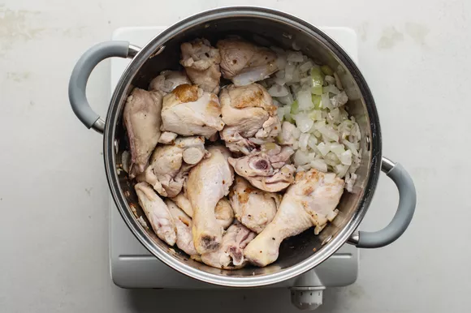

Coconut Chicken Curry
Vietnamese curries are not as well known as Indian or Thai curries, but they are just as flavorful and bold in flavor. More of a stew than the curries you might have tried, Vietnamese curries stand out from similar preparations in India or Thailand due to the pronounced coconut flavor and generous use of fish sauce, a common ingredient in many Vietnamese recipes. In our version for cà ri gà, or chicken curry, coconut milk gives the curry a mild sweetness and a luxurious creaminess. Chunks of Russet potatoes, sweet potatoes, and carrots add texture and bulk to make this curry filling and satisfying.
In Vietnamese cuisine, careful design and balance of flavors and ingredients were already key before it was heavily influenced by the French presence in the country starting in the late 19th century when France took over Vietnam and Cambodia. The French heritage that was left behind after 1954 is clearly seen in today's Vietnam and its mixed culinary traditions. Potatoes, onions, coffee, varied pastries and desserts, broths, and stocks are only a small part of what the French left behind in local kitchens. That's why, when eating curry in Vietnam, the only possible side dish you can think of is a slice, or many, of Vietnamese baguette—instead of rice like in Thailand or flatbread like in India.
Serve this succulent curry with crusty bread, or if you're lucky enough to get your hands on one, a true Vietnamese baguette.
Ingredients
- 3 pounds bone-in chicken, dark and white meat
- 1 teaspoon salt, plus more for seasoning the chicken
- Freshly ground black pepper, to taste
- 2 tablespoons vegetable oil
- 1 large onion, peeled and coarsely chopped
- 2 large shallots, finely chopped
- 4 large cloves garlic, finely minced
- 1 3-inch piece ginger, peeled and finely minced
- 3 tablespoons Vietnamese or Madras curry powder
- 1 to 2 teaspoons granulated sugar, divided
- 2 stalks lemongrass, bruised
- 2 tablespoons fish sauce
- 4 cups low-sodium chicken broth
- 1 can coconut milk
- 6 small russet potatoes, peeled and cut into 1/4-inch slices
- 1 large sweet potato, peeled and cut into thick even slices
- 8 medium carrots, peeled and cut into thick even slices
- 2 cups whole milk
- Baguette, or cooked rice noodles, optional
Steps to Make It
- Gather the ingredients.
- Cut the chicken into bite-size portions. Season each piece of chicken with a little salt and ground black pepper and set aside.
- Heat the oil in a large, heavy pot. Add the onion and shallots and sauté until they are soft and translucent.
- Push the onions and shallots to the side and add the chicken pieces, cooking the meat until it begins to brown.

- Add the garlic and ginger and sauté for 3 minutes. Sprinkle in the curry powder, 1 teaspoon salt, and half of the sugar. Stir well.
- Add the lemongrass, fish sauce, chicken broth, and coconut milk. Turn the heat to medium-low, cover the pot and simmer for 30 minutes or until the chicken is completely cooked through.
- Add the potatoes, sweet potatoes, and carrot. Stir well, cover, and allow to simmer until the vegetables are soft, about 15 to 20 minutes.
- Pour in the whole milk and simmer uncovered for about 8 minutes. Before serving, taste the broth and, if needed, add more curry powder, salt and/or pepper. Remove the lemongrass stalk and discard. Serve to your liking over the optional cooked rice noodles and/or baguette slices.
- Enjoy!